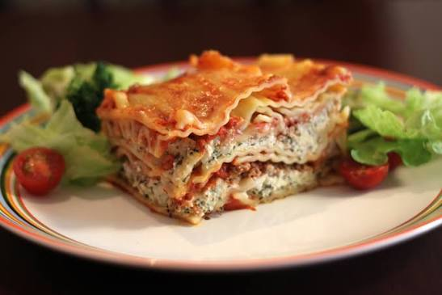

This recipe is considered to be most popular lasagna recipe on the internet for the past 2 decades, according to Allrecipes.
This lasagna is incredibly customizable, which means you can alter the ingredient list however you feel. This recipe lists the basic necessities, which still turns out to be a good meal!